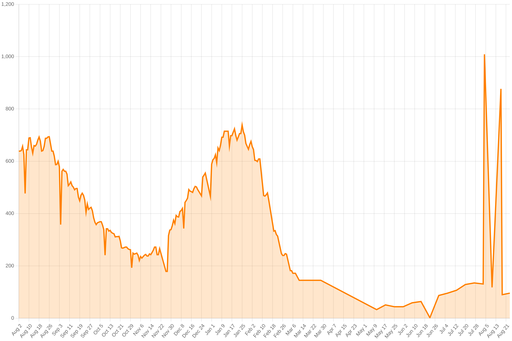

Missouri COVID data
The data on this page was updated Friday, August 5, 2022. For the values that are averages over 7 days, the start date is Thursday, July 28, 2022 and the end date is Wednesday, August 3, 2022. The original data comes from the Missouri Department of Health and Senior Services.
Download
This data is available to download as CSV, JSON, or a sqlite database. To read more about the data formats, please check the project README.
| CSV | JSON | sqlite |
New cases
There have been 11,061 new cases in the past 7 days, about 1,580 per day.

Outcomes
There are currently 1,009 people hospitalized with COVID-19.

131 people are in intensive care.
Unavailable
Starting January 18, 2022, the Missouri Department of Health and Senior Services no longer reports the number of people on ventilators.
The following sets of data are no longer available as of April 1, 2022:
- new vaccinations
- tests administered
- positivity rate
- deaths (only displayed in a graph now)
The data also previously distinguished between "confirmed" and "probable" cases, based on what kind of test was used. That is also no longer available.